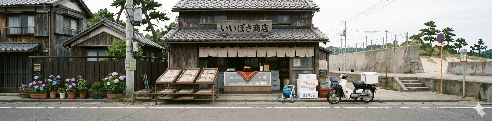
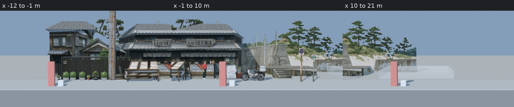
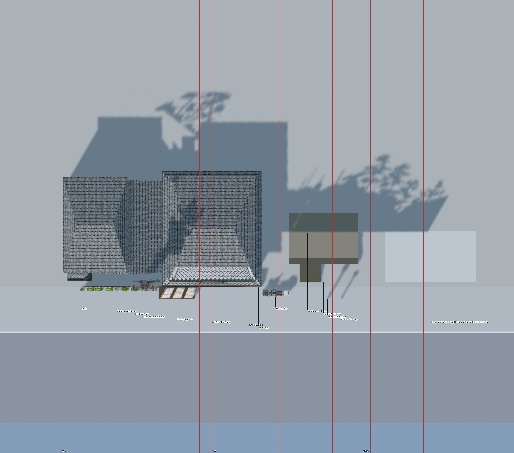

The third leg of route 2, the Shonan Coast, and its errand: up the steps from the beach to Grandma's whitebait shop on the beach road, where she shows the kid how to wrap the bento, then on along the promenade to the sand. It is laid out from your KM2-3 picture for your approval.
Your picture looks straight at the frontage, so it is laid along the road just as it stands: the neighbour's houses and their pots, the pole, the drying rack, the shop with its counter, the fish boxes and crates, the scooter, the low sea wall with its steps and the two signs. About 30 m, the shop's middle at x = 0.
A mini-game leg (the errand, M2): the play is at the counter, not a dribble.

Each model at its real size and place, seen through the game camera as the game frames it, the play lane at the front. See-through boxes are what is still to come. The shading is Blender's, not the game's toon look: judge the places, sizes, order and gaps.


| x (m) | What happens |
|---|---|
| 10 | start: up the steps from the beach (KM2-2 stops at their foot) |
| 4 | the scooter by the door: the kid stops the ball against its wheel |
| 2 | a calico cat on the shop's step, watching the drying whitebait (KM-N21) |
| 0 | the errand at the counter (M2): Grandma shows the order; fold the furoshiki's four corners in that order (four taps), tie the knot in two timed taps. Retry at once if a corner is wrong. The bento then rides on the backpack (the Delivered badge) |
| -1 | a swallow at its nest under the shop's eave (KM-N09), darting out over the road |
| 8 | a gull on the sea wall, eyeing the whitebait too (KM-N10) |
| 14 | out along the promenade toward the sand: KM2-4 The Kite Thief |
| x (m) | Model | Why there |
|---|---|---|
| -8.6 | KmPotPinkFlowers | the neighbour's pots along the fence (the kit's, where the picture has them) |
| -8.0 | KmHydrangeaPlanter | the neighbour's pots along the fence (the kit's, where the picture has them) |
| -7.5 | KmHydrangeaPlanter | the neighbour's pots along the fence (the kit's, where the picture has them) |
| -6.8 | KmHydrangeaPlanter | the neighbour's pots along the fence (the kit's, where the picture has them) |
| -6.3 | KmPotWhiteDaisies | the neighbour's pots along the fence (the kit's, where the picture has them) |
| -6.3 | KmShopNeighbour | the neighbour's two houses behind their board fence, the letterbox (KM-B39) |
| -5.8 | KmBonsaiBlueBowl | the neighbour's pots along the fence (the kit's, where the picture has them) |
| -5.1 | KmShopPines | the pines behind the neighbour's houses (a cut-out) |
| -5.1 | KmHydrangeaPlanter | the neighbour's pots along the fence (the kit's, where the picture has them) |
| -4.5 | KmPoleTransformer | the utility pole with its transformer |
| -2.3 | KmDryingRack | the whitebait drying rack, its trays tilted to the street (KM-A15) |
| 0.0 | KmGrandmaShop | Grandma's whitebait shop: the noren, the glass counter with the bento on its cloth (KM-B22) |
| 2.5 | KmFishBoxes | the fish boxes by the door and the hose reel (KM-A35) |
| 3.1 | KmCrates | the crates and tubs at the shop's corner (KM-A34) |
| 4.2 | KmScooter | Grandma's delivery scooter, its box on the back (the kit's, KM-V03) |
| 6.3 | KmPromenadeView | the promenade's high wall, the dune and its pines beyond the steps (a cut-out) |
| 7.4 | KmSeaWallSteps | the low sea wall and its steps up to the promenade (KM-B23) |
| 7.7 | KmNoParkingSign | the no-parking sign (KM-A43, a cut-out) |
| 8.6 | KmBusStopSign | the bus stop's sign (KM-A44, a cut-out) |
| 14.5 | (to come) | the promenade along the top of the wall, to the beach (KM2-4 goes down onto the sand from it) |